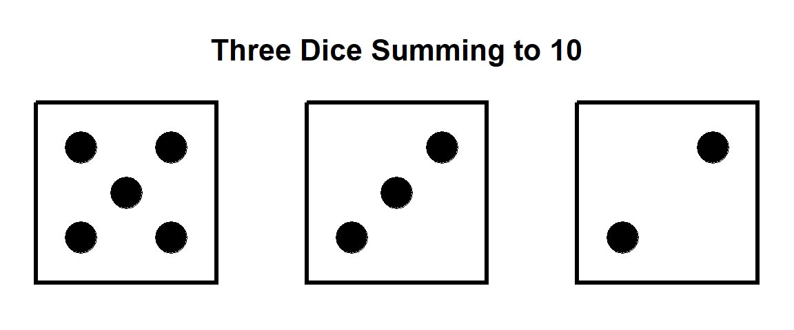
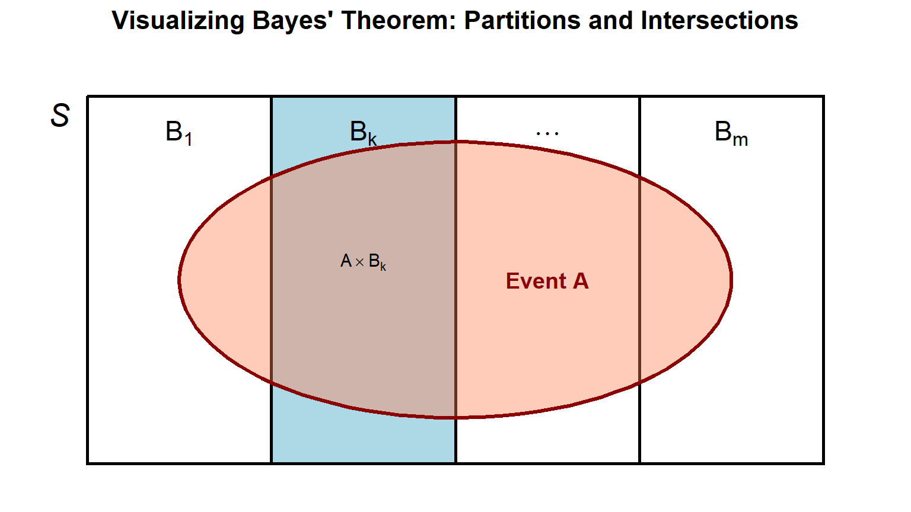
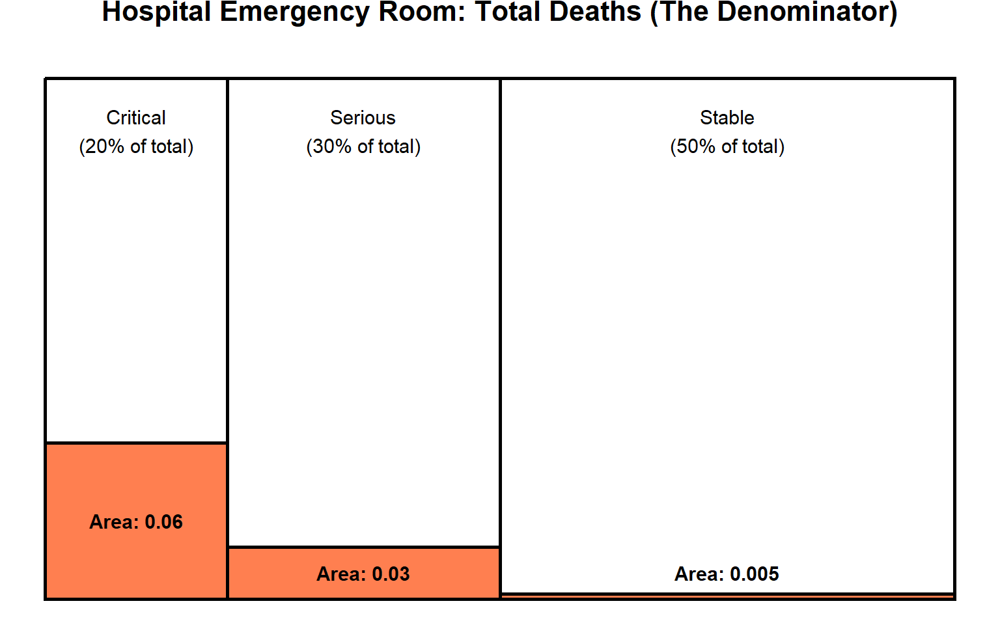

2 Probability (Basic Concepts)
2.1 Basic Concepts of Statistics & Random Experiments
- Statistics involves collecting, classifying, summarizing, organizing, analyzing, and interpreting data
- A random experiment is an experiment where the outcome cannot be predicted with certainty.
- Defining Characteristics of a Random Experiment:
- All possible outcomes of the experiment are known in advance.
- Any single performance of the experiment results in an outcome that is not known in advance.
- The experiment can be repeated under identical conditions.
2.2 Definition of a Set & Membership
- Definition A set is simply a collection of objects, these objects being called elements or members of the set.
- Examples include the set of all real numbers and the set of all UPNM students
- Membership of a set \(X\) by an object \(x\) is denoted by a special symbol \(\in\), read as “belongs to”
- The statement \(x \in X\) means that \(x\) is an element of, or belongs to, \(X\) .
- There is also an opposite statement \(x \notin X\) which means that \(x\) is not an element of, or does not belong to, \(X\) .
- Example: For example, with \(S\) being the set of all students registered for TPQ3783,
\(\in S\) (enter your name)
2.3 Specifying sets
Example of a set
\[\begin{align} S:= \{1, 2, 3, 4, 5, 6\} \end{align}\]
- The notation “:= ” means “is defined to be equal to
- \(S\) is a set that contains exactly six numbers listed
- The order of the elements does not matter. Its membership/ existance in the set is important
- If the set is large (multiple/ many members/ elements) and have a clear pattern, \(\ldots\) is typically used. E.g.: \(S:= \{1, \ldots, 20\}\)
2.5 Definition and Properties of Probability
- Probability is a real-valued set function \(P\) that assigns a number \(P(A)\) to each event \(A\) in the sample space \(S\).
- \(P(A) \ge 0\)
- \(P(S) = 1\)
- If \(A_1, A_2, \dots\) are mutually exclusive events (\(A_i \cap A_j = \emptyset\) for \(i \neq j\)), then \(P(A_1 \cup A_2 \cup \dots) = P(A_1) + P(A_2) + \dots\)
- \(P(\emptyset) = 0\) and \(0 \le P(A) \le 1\)
- \(P(A') = 1 - P(A)\)
- \(P(B \cap A') = P(B) - P(B \cap A)\)
- \(P(A \cup B) = P(A) + P(B) - P(A \cap B)\)
- If \(A \subset B\), then \(P(A) \le P(B)\)
2.5.1 Examples of Random Experiments
- The experiment of tossing a coin:
- There are two possible outcomes: getting a Head (H) or getting a Tail (T).
- Even though we know both possible outcomes, we cannot definitively predict that we will get a tail if we throw the coin in a particular manner.
- The experiment of rolling a die:
- There are six possible outcomes: the die showing up 1, 2, 3, 4, 5, or 6.
- We cannot for sure predict that we can make a particular number appear on the face of the dice when it is rolled.
2.5.2 Applied Real-Life Examples
- Quality Control & Manufacturing:
- Testing the length of life of a 60-watt light bulb until it burns out.
- There infinitely number of possible of outcomes. (Why?)
- Testing the length of life of a 60-watt light bulb until it burns out.
- Environmental Testing:
- Counting the number of bacteria colonies in a 100-milliliter water sample taken from a specific lake basin.
- Technology Reliability:
- Measuring the continuous amount of time in hours that a computer functions before breaking down.
- Queueing & Logistics:
- Measuring the waiting time in minutes until the first customer or patient arrives at a facility.
2.5.3 Properties of Probability
- Sample Space, \(S\)
- The event set, \(E\)
- The probability measure, \(p\)
2.5.4 Properties of Probability: Examples
- The experiment of tossing a coin:
- Sample Space, \(S:= \{H, T \}\)
- Event set of getting a Head, \(E:= \{H \}\)
- Probability measure of \(E\): \(p = \frac{1}{2}\)
| Probability measure | Description |
|---|---|
| \(P(A) \ge 0\) | Probabibility of an event \(A\) is \(0\) or greater |
| \(P(S) = 1\) | Probability of space \(S\) is 1 |
| \(0 \le P(A) \le 1\) | Probability is always between \(0\) and \(1\). |
2.6 Review of Set Algebra
| Symbols | Description |
|---|---|
| \(\emptyset\) | The null set or empty set. |
| \(A \subset B\) | \(A\) is a subset of \(B\). |
| \(A \cup B\) | the union of \(A\) and \(B\), representing elements in either set. |
| \(A \cap B\) | The intersection of \(A\) and \(B\), representing elements shared by both sets. |
| \(A'\) | The complement of \(A\), representing everything outside of \(A\). |
| Mutually Exclusive: | Events \(A_1, A_2, \dots, A_k\) are mutually exclusive if \(A_i \cap A_j = \emptyset\) for \(i \neq j\); they are disjoint sets. |
| Exhaustive Events: | Events \(A_1, A_2, \dots, A_k\) are exhaustive if their union forms the entire sample space, \(A_1 \cup A_2 \cup \dots \cup A_k = S\). |
- So if \(A_1, A_2, \dots, A_k\) are mutually exclusive and exhaustive events, we know that \(A_1 \cap A_2=\emptyset\), for \(i \ne j\) and \(A_1 \cup A_2 \cup \dots \cup A_k = S\)
2.6.1 Properties of Set Operations
- Commutative Laws:
- \(A \cup B = B \cup A\).
- \(A \cap B = B \cap A\).
- Associative Laws:
- \(A \cup B \cup C = A \cup (B \cup C)\).
- \(A \cap B \cap C = A \cap (B \cap C)\).
- Distributive Laws:
- \(A \cap (B \cup C) = (A \cap B) \cup (A \cap C)\).
- \(A \cup (B \cap C) = (A \cup B) \cap (A \cup C)\).
- De Morgan’s Laws:
- \((A \cup B)' = A' \cap B'\). (First Law)
- \((A \cap B)' = A' \cup B'\). (Second Law)
2.7 Additional Properties of Probability
- Probability is a real-valued set function \(P\) that assigns a number \(P(A)\) to each event \(A\) in the sample space \(S\).
| Properties of probability | Description |
|---|---|
| \(P(A) \ge 0\) | Probabibility of an event \(A\) is \(0\) or greater. |
| \(P(S) = 1\) | Probability of space \(S\) is 1. |
| \(P(\emptyset) = 0\) | Probability of an empty set \(\emptyset\) is \(0\). |
| \(0 \le P(A) \le 1\) | Probability is always between \(0\) and \(1\). |
| \(P(A') = 1 - P(A)\) | Given event \(A\). The probability of the complement of event \(A\), i.e. \(A^{c}\) or \(A\)’ is \(1 - P(A)\) |
| \(P(A) = \sum_{i = 1}^{\infty} P(A \cap B_{i})\) | |
| \(P(A) \le P(B)\) | If \(A \subset B\), then \(P(A) \le P(B)\) |
| \(P(B \cap A)\) | Probability that elements exists in both events \(A\) and \(B\) |
| * \(P(B \cap A') = P(B) - P(B \cap A)\) | |
| \(P(A \cup B) = P(A) + P(B) - P(A \cap B)\) | |
| \(P(A_1 \cup A_2 \cup \dots) = P(A_1) + P(A_2) + \dots\) | If \(A_1, A_2, \dots\) are mutually exclusive events (\(A_i \cap A_j = \emptyset\) for \(i \neq j\)), then \(P(A_1 \cup A_2 \cup \dots) = P(A_1) + P(A_2) + \dots\). |
2.7.1 Axioms of probabilities
- If \(P\) is a probability function and \(A\) and \(B\) are any sets in \(\mathbfcal{B}\), then
\(P(A \cap A^{c}) = P(B) - P(A \cap B)\)
Proof:
\[\begin{align} B =& (B \cap A) \cup (B \cap A^{c}) \\ P(B) =& P(B \cap A) + P(B \cap A^{c}) \\ P(B \cap A^{c}) =& P(B) -P(B \cap A) \end{align}\]
- \(P(A \cup A^{c}) = P(A) + P(B) - P(A \cap B)\)
Proof:
\[\begin{align} A \cup B =& A \cup (B \cap A^{c}) \\ P(A \cup B) =& P(A) + P(B \cap A^{c}) \\ P(A \cup B) =& P(A) + P(B) -P(B \cap A) \\ \end{align}\]
2.7.2 Probability Calculation Example
Experiment: Tossing a coin twice.
Sample Space: \(S := \{HH, HT, TH, TT\}\), where each outcome is equally likely with a probability of \(1/4\). (Hint: equally likely: each elements in the set of equal chance of being selected hence each element has the probability of 1/4)
- Let \(E := \{HH, HT\}\) be the event that the first toss is a head.
- Let \(F := \{HH, TH\}\) be the event that the second toss is a head.
Find the probability of the union \(P(E \cup F)\):
Answer (step-by-step):
- \(P(E \cup F) = P(E) + P(F) - P(E \cap F)\).
- \(P(E \cup F) = 1/2 + 1/2 - P(\{HH\})\).
- \(P(E \cup F) = 1 - 1/4 = 3/4\).
- Alternatively, \(P(E \cup F) = P(\{HH, HT, TH\}) = 3/4\).
2.7.3 Probability Calculation Example
Experiment: Tossing a fair dice.
Sample Space: \(S := \{1, 2, 3, 4, 5, 6\}\) where each outcome is equally likely
- Let \(E\) be the event that consist of event numbers
- Let \(F\) be the event that consist of numbers greater than 3
Find the probability of the union \(P(E \cup F)\):
Answer (step-by-step):
- Probability for each element is \(\frac{1}{2}\)
- \(E := \{2, 4, 6\}\), hence \(P(E) = \frac{1}{2}\)
- \(E := \{4, 5, 6\}\), hence \(P(F) = \frac{1}{2}\)
- \((E \cap F) := \{4, 6 \}\), hence \(P(E \cap F) = \frac{1}{3}\)
- \(P(E \cup F) = P(E) + P(F) - P(E \cap F)\).
- \(P(E \cup F) = 1 - 1/3 = \frac{2}{3}\).
- Alternatively, \(P(E \cup F) = P(\{H2, 4, 5, 6\}) = \frac{4}{6} = \frac{2}{3}\).
2.7.4 Probability Calculation: In-class exercise (A practice to your quiz)
** Task:** To answer the following questions, you will need to pair up with a friend.
You are given 10 minutes. Try to answer the following questions.
After 10 minutes, switch your answer with your friend. 5 minutes, review your friends work and add any missing steps/ fix the calculation if needed.
- If \(P(A) = 0.4\), \(P(B) = 0.5\) and \(P(A \cap B) = 0.3\), calculate the following:
\(P(A \cup B)\)
\(P(A \cap B')\)
\(P(A' \cup B)\)
[6 mark]
2. A fair die is rolled three times. Let \(A_{1} := {\text{Outcome is 1 or 2 on the first rolle}}\), \(A_{2} := {\text{Outcome is 3 or 4 on the first rolle}}\), and \(A_{3} := {\text{Outcome is 5 or 6 on the first rolle}}\). Given that
\(P(A_{i}) = \frac{1}{3}\) for \(i = 1, 2, 3\)
\(P(A_{i} \cap A_{j}) = \left(\frac{1}{3}\right)^{2}\) for \(i \ne j\) and \(P(A_{1} \cap A_{2} \cap A_{3}) = \left(\frac{1}{3}\right)^{3}\).
Find \(P(A_1 \cup A_2 \cup A_3)\).
[4 mark]
2.8 Method of Enumeration & Multiplication Principle
- The method of enumeration is used to determine the number of outcomes associated with the events of certain random experiments.
- Multiplication Principle: If an experiment \(E_1\) has \(n_1\) outcomes and for each possible outcome, a second experiment \(E_2\) has \(n_2\) possible outcomes, the composite experiment \(E_1 E_2\) has \(n_1 n_2\) possible outcomes.
- Example: Tossing a coin (\(E_1\) with 2 outcomes) and rolling a die (\(E_2\) with 6 outcomes).
- The total number of outcomes is \(2 \times 6 = 12\).
- The sample space represented in ordered pairs: \(S = \{(H,1), (H,2), (H,3), (H,4), (H,5), (H,6), (T,1), (T,2), (T,3), (T,4), (T,5), (T,6)\}\).
- If an experiment is repeated multiple times, such as tossing a coin ten times, the number of outcomes in the sample space is \(2 \times 2 \times \dots \times 2 = 2^{10}\).
2.9 Probability Distribution
Experiment involves arrangement, selection and replacement.
Suppose that we have 4 letter a,b,c and d, the number of possible four-letter code easily can be calculated if each letter can be repeated which is \(4^4=256\)
If consider without repetition, then the number of possible four-letter code is the number of permutation of 4 letter which is \(4!=24.\)
2.10 Permutations and Combinations (Sampling)
- Arrangement and Replacement Example: Given 4 letters a, b, c, and d.
- With repetition: The number of possible four-letter codes is \(4^4 = 256\).
- Without repetition: The number of possible four-letter codes is a permutation of 4 letters, which is \(4! = 24\).
- Case 1 (Replacement, Ordered): Sampling with replacement of an ordered sample of size \(r\) yields \(n^r\) arrangements, i.e. \(r = n^r\).
- Case 2 (No Replacement, Ordered - Permutation): Sampling without replacement of \(r\) ordered items from \(n\) objects.
- \(_nP_r = \frac{n!}{(n-r)!}\). It must be true that \(r \le n\).
- Case 3 (No Replacement, Unordered - Combination): Sampling without replacement of \(r\) selected objects from \(n\) objects with unordered subsets.
- \(_nC_r = \frac{n!}{r!(n-r)!}\).
2.11 Permutation Calculation Example
How many four-letter code words are possiblle using the letters in IOWA if
- The letters may not be repeated
There are 4 letters.
Each time a letter is placed, the number available reduced by 1
\[4 \times 3 \times 2 \times 1 = 24\]
- The letters may be repeated
Suppose that two tennis players A and B are playing in a match. The first player that wins three sets will win the match. How many ways could this tennis match ends?
2.12 Intervals
Consider two numbers, \(a, b \in \mathbb{R}\)
The open interval is: \((a, b):= \{x \in \mathbb{R}: a < x < b \}\)
The close interval is: \([a, b]:= \{x \in \mathbb{R}: a \le x \le b \}\)
The open and close interval: \((a, b]:= \{x \in \mathbb{R}: a < x \le b \}\)
The close and open interval: \([a, b):= \{x \in \mathbb{R}: a \le x < b \}\)
Unbounded intervals: \([a, \infty):= \{x \in \mathbb{R}: a \le x \}\)
Unbounded intervals: \((-\infty, b]:= \{x \in \mathbb{R}: x \le b \}\)
2.13 Probability
2.13.1 Probability of an event
- Probability of any event, \(A\), as the proportion of the possible outcomes which give rise to that event
\[\begin{align} \frac{\text{no. of possible outcomes which give rise to event}}{\text{total no. of possible outcomes}} \end{align}\]
2.13.2 Probability of an event: Equally likely outcomes
The Leibniz-Galileo Problem
In a game of tossing three fair dice, Leibniz thought that probability of getting a total is 10 and the probability that the total is 9 are equals. However, Galileo thought that these two probabilities are in the ratio 27:25.


2.13.3 Probability of an event: Frequency interpretation of probability
If an ``experiment” can be repeated indefinitely, then the relative frequency of any event at any stage is defined as
\[\begin{align} \frac{\text{no. of occurrences of event so far}}{\text{total no. of repetitions of experiment so far}} \end{align}\]
This relative frequency will obviously fluctuate randomly as the number of repetitions increases, but the expectation is that it will in the long run settle down to a limiting value which is the probability of the event.
This method is to find the probabilities to events in cases where there is no symmetry
2.13.4 Probability of an event: Example
A batch of 15 items contains 6 defective ones. A random sample of 5 is chosen. What is the probability that 2 are defective?
Answer (Step-by-step)
- Total no.of possible outcomes is how many ways that 5 defective items is chosen.
\({15 \choose 5} = 3003\)
- No. of possible outcomes which give rise to event
\({6 \choose 2} = 15\)
- Probability of event \(A\): $P(A) =
2.13.5 Probability of an event: Example
A batch of 15 items contains 6 defective ones. A random sample of 5 is chosen. What is the probability that at least 2 are defective?
Answer (Step-by-step)
If at least two are defective, we use OR (2 OR 3 OR 4 OR 5)
Defective Non-defective 2 3 3 2 4 1 5 0 No. of possible outcomes of choosing 5 items is
\[{15 \choose 6} = 5005\] 3. The probability is
\[\frac{{6 \choose 2}{9 \choose 3} + {6 \choose 3}{9 \choose 2} + {6 \choose 4}{9 \choose 1} + {6 \choose 5}{9 \choose 30}}{5005} = \frac{2115}{5005} = 0.42258\]
2.13.6 Probability of an event: Classical vs Uniform Measures
Recall the clasical measure:
E.g.: Let \(S:= \{s_1, s_2, \ldots, s_k\}\). For any events \(A \subset S\),
\[\begin{align} \frac{\text{no. of possible outcomes in $A$}}{\text{total no. of possible outcomes in $S$}} \end{align}\]
- If $A:= \{s_i\}$, then $P(A) =$ <input type="text" placeholder=" " style="width: 150px; border: 1px solid black; padding: 2px;">For constinuous \(S\), we use uniform measure
- if \(S\) is two-dimensional and of finite area then we define \[P(A) = \frac{\text{area of $A$}}{{\text{area of $S$}}}\]
Note:
When an outcome is chosen at random from a sample space \(S\): classical probability measure is used
When \(S\) is discrete, and the uniform measure if \(S\) is continuous.
For continuous probability measures, events of probability \(0\) are NOT impossible and events of probability \(1\) are NOT certain.
2.13.7 Probability of an event: Classical vs Uniform Measures: Example
The diagram below shows a rectangle with a length of 8 and a width of 4. It is divided into four triangular regions by drawing the two diagonal lines from corner to corner. The regions are numbered from 1 to 4:
Region 1 is the top triangle,
Region 2 is the right triangle,
Region 3 is the bottom triangle, and
Region 4 is the left triangle.
The perimeter is divided into 4 edges numbered in accordance with the regions (Edge 1 is the top edge, Edge 2 is the right edge, etc.).
A point is chosen at random from the rectangle. What is the probability that it is in region 1? What is the probability that it is in region 2?
A point is chosen at random from the perimeter of the rectangle. What is the probability that it is on edge 1? What is the probability that it is on edge 2?

Solution
- To find the probability of a point landing in a specific region, we divide the area of that region by the total area of the shape.
Total Area: The rectangle has a length of 8 and a width of 4.
Total Area = \(8 \times 4 = 32\).
Region 1 (Top Triangle): The base of this triangle is the top edge of the rectangle (length 8). Because the diagonals meet exactly in the center, the perpendicular height of this triangle is half of the rectangle’s width (\(4 \div 2 = 2\)).
Area of Region 1 = \(\frac{1}{2} \times \text{base} \times \text{height} = \frac{1}{2} \times 8 \times 2 = 8\).
Region 2 (Right Triangle): The base of this triangle is the right edge of the rectangle (width 4). The perpendicular height from the center to this edge is half of the rectangle’s length (\(8 \div 2 = 4\)).
Area of Region 2 = \(\frac{1}{2} \times \text{base} \times \text{height} = \frac{1}{2} \times 4 \times 4 = 8\).
Note: The diagonals of any rectangle divide it into four triangles of equal area, even though they have different perimeters
Dividing the region areas by the total area gives the final probabilities:
The probability that a random point is in Region 1 is \[\frac{8}{32} = \frac{1}{4} = 0.25\]
The probability that a random point is in Region 2 is
\[\frac{8}{32} = \frac{1}{4} = 0.25\]
- To find the probability of a point landing on a specific edge, we divide the length of that edge by the total perimeter.
Total Perimeter: The rectangle has two sides of length 8 and two sides of length 4.Total Perimeter = \(8 + 8 + 4 + 4 = 24\).
Edge 1 (Top Edge): This edge has a length of 8.
Edge 2 (Right Edge): This edge has a length of 4.
Dividing the edge lengths by the total perimeter gives the final probabilities:
The probability that a random point on the perimeter is on Edge 1 is \[\frac{8}{24} = \frac{1}{3} = 0.333\]
The probability that a random point on the perimeter is on Edge 2 is \[\frac{4}{24} = \frac{1}{6} = 0.167\]
2.13.8 Probability of an event: Classical vs Uniform Measures: Example
Consider the experiment where one point is chosen at random from the interval \([0, 1]\). For \(a \in [0, 1]\), \(P(a) = 0\), that is, the event \(x = a\) has probability \(0\), in the uniform probability measure.
Points have zero length.
But that does not mean that this event is impossible:
if we choose a point at random from \([0, 1]\) then any point could be chosen but the probability that a particular point is chosen is 0.
To get a positive probability, we need an event:
- E.g.: \(\frac{1}{4} \le a \le \frac{3}{4}\) where the probability is \(\frac{1}{2}\)
2.14 Independent vs. Dependent Events
- Problem Context: Consider selecting 2 cards from a standard deck of 52 cards.
- With replacement: The probability of obtaining two kings involves independent events.
- Without replacement: The probability of obtaining two kings involves dependent events.
- Independent Events: Two events are independent if the occurrence of one of the events does not affect the probability of the occurrence of the other event.
\[\begin{align} P(A \cap B) = P(A) P(B) \end{align}\]
- For more then two finite events, a set of mutually exclusive events are
\[\begin{align} P(A_1 \cap A_2 \cap \ldots A_k) = P(A_1) P(A_2) \ldots P(A_k) \end{align}\]
Dependent Events: Two events are dependent if the occurrence of one of the events affects the probability of the occurrence of the other event.
Problems with dependent events can often be solved using conditional probability, also known as the multiplication rule.
Events that are not independent are dependent.
Event \(A\) and \(B\) are independent iff \(P(A \cap B) = P(A \cap B) = P(A) P(B)\). Otherwise, \(A\) and \(B\) are dependent
Dependent events can be solved using tree diagaram
2.14.1 Independent Events: Example
Let \(A\) and \(B\) be independent events with \(P(A) = 0.7\) and \(P(B) = 0.2\). Compute
- \(P(A \cap B)\)
Since \(A\) and \(B\) are independent, \[\begin{align} P(A \cap B) = P(A) P(B) = 0.7 \times 0.2 = 0.14 \end{align}\]
- \(P(A \cup B)\)
Since \(A\) and \(B\) are independent, then using the
\[\begin{align} P(A \cup B) = P(A) + P(B) - P(A \cap B) = 0.7 + 0.2 -0.14 = 0.76 \end{align}\]
- \(P(A' \cup B')\)
Using De Morgan’s second law,
\[\begin{align} P(A' \cup B') = 1 - P(A \cap B)' = 1 - 0.76 = 0.24 \end{align}\]
2.14.2 Independent Events: Example
Toss a fair coin twice. Let \(A\) be the event “head on first toss”, \(B\) be the event “head on second toss” and \(C\) be the event “same face on both tosses”. Show that these three events are pairwise independent but not mutually independent.
Solution:
- Toss a fair coin twice lead to a sample space
\[S := \{HH, HT, TH, TT\} \]
- The sets of event \(A, B\) and \(C\) are
\[\begin{align} A:= & \{HH, HT\} \\ B:= & \{HH, TH\} \\ C:= & \{HH, TT\} \\ \end{align}\]
- The probability of each events are
\[\begin{align} P(A) =& \frac{1}{2} \\ P(B) =& \frac{1}{2} \\ P(C) =& \frac{1}{2} \end{align}\]
- The intersection of the events are
\[\begin{align} A \cap B:= & \{HH\} \\ A \cap C:= & \{HH\} \\ B \cap C:= & \{HH\} \\ \end{align}\]
- To show pariwise independent, we need to show that
\[\begin{align} P(A \cap B) =& P(A)P(B) \\ P(A \cap C) =& P(A)P(C) \\ P(B \cap C) =& P(B)P(C) \end{align}\]
- Hence,
\[\begin{align} P(A \cap B) =& \frac{1}{4} \rightarrow P(A)P(B) = \frac{1}{2}\frac{1}{2} = \frac{1}{4}\\ P(A \cap C) =& \frac{1}{4} \rightarrow P(A)P(C) = \frac{1}{2}\frac{1}{2} = \frac{1}{4}\\ P(B \cap C) =& \frac{1}{4} \rightarrow P(B)P(C) = \frac{1}{2}\frac{1}{2} = \frac{1}{4} \end{align}\]
Therefore, the events \(A\), \(B\), and \(C\) are pairwise independent.
Three events \(A\), \(B\), and \(C\) are mutually independent if they are pairwise independent and satisfy
\[P(A \cap B \cap C) = P(A) \cdot P(B) \cdot P(C)\]
- The intersection of events are
\[A \cap B \cap C:= \{HH\} \] so the probabilty is
\[P(A \cap B \cap C) = \frac{1}{4}\] 10. The product of probability is
\[P(A) \cdot P(B) \cdot P(C) = \frac{1}{2} \times \frac{1}{2} \times \frac{1}{2} = \frac{1}{8}\]
Since \(P(A \cap B \cap C) \neq P(A) \cdot P(B) \cdot P(C)\) (\(\frac{1}{4} \neq \frac{1}{8}\)), the events \(A\), \(B\), and \(C\) are not mutually independent.
2.14.3 Independent Events: Exercise
If \(P(A) = 0.8\), \(P(B) = 0.5\), and \(P(A \cup B) = 0.9\), are \(A\) and \(B\) independent events? Show your answer.
Solution:
To show \(A\) and \(B\) are independent, we need to show \(P(A)P(B) = P(A \cap B)\)
\[\begin{align} P(A \cup B) =& P(A) + P(B) - P(A \cap B) \\ P(A \cap B) =& P(A) + P(B) - P(A \cup B) = 0.8 + 0.5 - 0.9 = 0.4\\ P(A)P(B) =& (0.8)(0.5) = 0.4 = P(A \cap B) \end{align}\]
Since \(P(A \cap B) = 0.4\) and \(P(A) \cdot P(B) = 0.4\), the condition \(P(A \cap B) = P(A) \cdot P(B)\) is satisfied.
2.14.4 Independent Events: Exercise
Let \(A\) be the event that the sum of the two numbers shown is \(7\), let \(B\) be the event that the sum of the two numbers shown is 8 and \(C\) be the event that the first number shown is even.
Find the probabilities of the events \(A, B, C\), \(A \cap C\) and \(B \cap C\).
Are \(A\) and \(C\) independent? Are \(B\) and \(C\) independent?
Justify your answers.
Solution:
| (1, 1) | (1, 2) | (1, 3) | (1, 4) | (1, 5) | (1, 6) |
| (2, 1) | (2, 2) | (2, 3) | (2, 4) | (2, 5) | (2, 6) |
| (3, 1) | (3, 2) | (3, 3) | (3, 4) | (3, 5) | (3, 6) |
| (4, 1) | (4, 2) | (4, 3) | (4, 4) | (4, 5) | (4, 6) |
| (5, 1) | (5, 2) | (5, 3) | (5, 4) | (5, 5) | (5, 6) |
| (6, 1) | (6, 2) | (6, 3) | (6, 4) | (6, 5) | (6, 6) |
- Probabilities of EventsEvent
\(A\) (Sum is 7):
\(A = \{(1,6), (2,5), (3,4), (4,3), (5,2), (6,1)\}\)
Number of outcomes \(n(A) = 6\)
\(P(A) = \frac{6}{36} = \frac{1}{6}\)
Event \(B\) (Sum is 8):$
B = {(2,6), (3,5), (4,4), (5,3), (6,2)}$
Number of outcomes \(n(B) = 5\)
\(P(B) = \frac{5}{36}\)
Event \(C\) (First number shown is even):
\(C = \{(2,1), (2,2), (2,3), (2,4), (2,5), (2,6), (4,1), (4,2), (4,3), (4,4), (4,5), (4,6), (6,1), (6,2), (6,3), (6,4), (6,5), (6,6)\}\)
Number of outcomes \(n(C) = 18\)
\(P(C) = \frac{18}{36} = \frac{1}{2}\)
Event \(A \cap C\) (Sum is 7 AND first number is even):
\(A \cap C = \{(2,5), (4,3), (6,1)\}\)
Number of outcomes \(n(A \cap C) = 3\)
\(P(A \cap C) = \frac{3}{36} = \frac{1}{12}\)
Event \(B \cap C\) (Sum is 8 AND first number is even):
\(B \cap C = \{(2,6), (4,4), (6,2)\}\)
Number of outcomes \(n(B \cap C) = 3\)
\(P(B \cap C) = \frac{3}{36} = \frac{1}{12}\)
Independence Results\(A\) and \(C\) are independent.\(B\) and \(C\) are NOT independent.
Justification
Two events \(X\) and \(Y\) are independent if and only if \(P(X \cap Y) = P(X) \cdot P(Y)\).
For \(A\) and \(C\):
\(P(A \cap C) = \frac{1}{12}\)
\(P(A) \cdot P(C) = \frac{1}{6} \times \frac{1}{2} = \frac{1}{12}\)
Since \(P(A \cap C) = P(A) \cdot P(C)\), events \(A\) and \(C\) are independent.
For \(B\) and \(C\):
\(P(B \cap C) = \frac{3}{36} = \frac{1}{12}\)
\(P(B) \cdot P(C) = \frac{5}{36} \times \frac{1}{2} = \frac{5}{72}\)
Since \(P(B \cap C) \neq P(B) \cdot P(C)\) (\(\frac{6}{72} \neq \frac{5}{72}\)), events \(B\) and \(C\) are not independent.
2.14.5 Independent Events vs. Dependent Events: Examples
Independent Events
Flipping a coin and rolling a die: Getting “Heads” on the coin doesn’t change your 1-in-6 chance of rolling a “4” on the die.
Buying a lottery ticket and getting a flat tire: Winning (or losing) the lottery has no influence on the probability of your tire popping on the way home.
Having a boy, then having another boy: The biological odds of having a boy are roughly 50%. Having a boy first does not magically make the odds of having a girl next time 100%. The odds reset to 50% for the second child.
When training a model to recognize tumors in MRI scans, Patient A’s scan is completely independent of Patient B’s scan. The outcome of one does not change the probability of the other. If you shuffle the order of the images during training, the model learns exactly the same way.
This classification algorithm (often used for spam filtering) calculates probabilities by making a “naive” assumption: it treats every feature as an independent event. It assumes the presence of the word “urgent” in an email is completely independent of the presence of the word “money,” multiplying their individual probabilities together to guess if the email is spam.
Dependent Events
If you draw an Ace from a standard 52-card deck and keep it in your hand, the odds of drawing another Ace change. There are now only 3 Aces left in a 51-card deck.
If you have 10 black socks and 10 white socks, the odds of pulling a black sock are 50%. If you pull out a black sock and put it on your foot, there are now only 9 black socks left out of 19. The odds for your second pull have changed.
If there is a major accident on your route to work (Event A), the probability that you will be late to work (Event B) drastically increases. (Traffic data)
Text generation relies entirely on dependent probability. If an LLM is generating a sentence and has already output “The quick brown”, the probability of the next word being “fox” is massively higher than it would have been if the previous words were “I ate a”. The next prediction depends directly on the sequence of previous predictions. (Large Language Models (NLP))
The probability that it will rain on Tuesday is highly dependent on the barometric pressure and weather conditions from Monday. Models like ARIMA or Recurrent Neural Networks (RNNs) are specifically designed to handle this dependency. (Time Series Forecasting)
2.15 Conditional Probability
Definition 1.3-1: The conditional probability of an event \(A\), given that event \(B\) has occurred, is defined mathematically.
The formula for conditional probability is:
\[P(A|B) = \frac{P(A \cap B)}{P(B)}\]
provided that \(P(B) > 0\).
2.15.1 Properties of Independent Events
- Definition: Events \(A\) and \(B\) are independent if and only if \(P(A \cap B) = P(A)P(B)\). Otherwise, \(A\) and \(B\) are called dependent events.
- Properties of Independent Events:
- If \(A\) and \(B\) are independent, then \(P(A|B) = P(A)\) if \(P(B) > 0\), and \(P(B|A) = P(B)\) if \(P(A) > 0\).
- If \(A\) and \(B\) are independent, so are \(A\) and \(B'\), \(A'\) and \(B\), and \(A'\) and \(B'\).
2.15.2 Conditional Probability: Example
A bowl contains 8 chips, where 3 of the chips are red and the remaining five are blue. Two chips are to be drawn successively, at random and without replacement. We use conditional probability to find the probability that the first draw results in a red chip (\(C_1\)) and that the second draw results in a blue chip (\(C_2\)).
Calculate the conditional probability that a red chip was drawn in the second step given that the a blue chip was drawn previously.
What is the probability of drawing a red chips in the second time?
Solution:
- When a blue chip is drawn on the first try (without replacement):
The total remaining chips in the bowl becomes \(8 - 1 = 7\).
The remaining number of red chips is still 3.
Therefore, the conditional probability is: \[P(R_2 \mid B_1) = \frac{3}{7}\]
- Probability of drawing a red chip on the 2nd draw: \(P(R_2)\)
Using the Law of Total Probability, drawing a red chip on the second draw can happen under two mutually exclusive scenarios depending on the outcome of the first draw:
First draw is Red, second draw is Red (\(R_1 \cap R_2\))
First draw is Blue, second draw is Red (\(B_1 \cap R_2\))\[P(R_2) = P(R_1 \cap R_2) + P(B_1 \cap R_2)\] \[P(R_2) = P(R_1) \cdot P(R_2 \mid R_1) + P(B_1) \cdot P(R_2 \mid B_1)\]
Substitute the probabilities:
\(P(R_1) = \frac{3}{8}\)
\(P(R_2 \mid R_1) = \frac{2}{7}\) (if a red is drawn first, 2 red chips remain out of 7)
\(P(B_1) = \frac{5}{8}\)
\(P(R_2 \mid B_1) = \frac{3}{7}\)
\[P(R_2) = \left(\frac{3}{8} \times \frac{2}{7}\right) + \left(\frac{5}{8} \times \frac{3}{7}\right)\]
\[P(R_2) = \frac{6}{56} + \frac{15}{56} = \frac{21}{56} = \frac{3}{8}\]
Conclusion: The probability of drawing a red chip on the second draw is \(\frac{3}{8}\) (or \(0.375\)).
2.15.3 The Birthday Problem
What is the probability that, in a group of n people, two of them share the same birthday?
How many people would need to be in a room for there to be a 50 percent chance that at least two of them share the same birthday?
Person 1: Enters an empty room with 365 out of 365 days available.
Person 2: Given Person 1 claimed a day, they only have 364 safe days left to avoid a match (\(P = \frac{364}{365}\)).
Person 3: Strictly dependent on the first two outcomes, they only have 363 days left (\(P = \frac{363}{365}\)).
Person 25: Strictly dependent on the first 24 outcomes, they only have 341 safe days left (\(P = \frac{341}{365}\)).
To find the probability of at least one shared birthday, we multiply the conditional probabilities of avoiding a match, then use the rule of complements.
\[P(\text{Match}) = 1 - \left(\frac{365}{365} \times \frac{364}{365} \times \dots \times \frac{341}{365}\right)\] \[P(\text{Match}) = 1 - 0.4313 = 0.5687\]
With 23 people, the probability crosses 50.7%.
With 70 people, the probability hits 99.9%.
2.15.4 Interactive Game: The Impossible Bet
- The Setup: Offer a crowd of 30+ people a $10 bet that a shared birthday exists in the room.
- The Execution: Call out months one by one. Have people born in that month stand up and state their day.
- The Reveal: The audience falls for the intuitive trap, but the math is heavily in your favor. Statistically, two people standing will call out the same number well before you reach December.
2.16 Conditional Probability: Example
When Netflix or Amazon recommends something to you, they are rarely looking at items in a vacuum. They are calculating conditional probabilities based on user behavior.
E.g.: “What is the probability this user will watch Stranger Things (\(Event\ A\)), given that they already watched The Umbrella Academy (\(Event\ B\))?”
A Markov Model is a system that transitions from one state to another, where the probability of the next state depends only on the current state.
E.g.: “Given that the current word is ‘New’ (\(Event\ B\)), what is the probability that the next word is ‘York’ (\(Event\ A\)) versus ‘shoes’?”
2.16.1 Conditional Probability: Exercise
A velvet bag contains 15 marbles in three different colors (three possible events per draw):
6 Red marbles
5 Blue marbles
4 Green marbles
You draw 4 marbles in a row without putting any back (four dependent steps).
What is the exact probability of drawing a Red, then a Blue, then a Green, and finally another Red marble?
To find the probability of drawing Red (\(R_1\)), then Blue (\(B_2\)), then Green (\(G_3\)), and finally Red (\(R_4\)) without replacement, we use the General Multiplication Rule for dependent events: \[P(R_1 \cap B_2 \cap G_3 \cap R_4) = P(R_1) \cdot P(B_2 \mid R_1) \cdot P(G_3 \mid R_1 \cap B_2) \cdot P(R_4 \mid R_1 \cap B_2 \cap G_3)\]
Step 1: First Draw — Red (\(R_1\))
- Bag contents: 6 Red, 5 Blue, 4 Green (15 total)
\[P(R_1) = \frac{6}{15} = \frac{2}{5}\]
Step 2: Second Draw — Blue (\(B_2\))Bag contents after \(R_1\): 5 Red, 5 Blue, 4 Green (14 total)
\[P(B_2 \mid R_1) = \frac{5}{14}\]
Step 3: Third Draw — Green (\(G_3\))Bag contents after \(R_1, B_2\): 5 Red, 4 Blue, 4 Green (13 total)\[P(G_3 \mid R_1 \cap B_2) = \frac{4}{13}\]
Step 4: Fourth Draw — Red (\(R_4\))Bag contents after \(R_1, B_2, G_3\): 5 Red, 4 Blue, 3 Green (12 total) \[P(R_4 \mid R_1 \cap B_2 \cap G_3) = \frac{5}{12}\]
Final Calculation
- Multiply all individual conditional probabilities together: \[P(R_1 \cap B_2 \cap G_3 \cap R_4) = \frac{6}{15} \times \frac{5}{14} \times \frac{4}{13} \times \frac{5}{12}\] \[P(R_1 \cap B_2 \cap G_3 \cap R_4) = \frac{6 \times 5 \times 4 \times 5}{15 \times 14 \times 13 \times 12} = \frac{600}{32,760}\]
- Simplifying the fraction by dividing numerator and denominator by 120:
\[\mathbf{P(R_1 \cap B_2 \cap G_3 \cap R_4) = \frac{5}{273}} \approx 0.018315 \quad (\text{or } 1.8315\%)\]
2.16.2 Conditional Probability: Exercise
An IT specialist is analysing traffic on a highly secure corporate email server. Because the security is very tight, spam is quite rare.
Only 5% of all incoming emails are actually Spam. The other 95% are Legitimate internal emails. You are looking at how often the word “URGENT” is used in these emails.Spammers love this word. If an email is Spam, there is a 40% chance it contains the word “URGENT”. Normal employees rarely use it. If an email is Legitimate, there is only a 2% chance it contains the word “URGENT”.
An alert pops up: A new email has just arrived, and it contains the word “URGENT”.
Based on conditional probability, what is the exact percentage chance that this specific email is actually Spam?
2.16.3 Bayes’ Theorem
Let \(B_1, B_2, \dots, B_m\) constitute a partition of the sample space \(S\).
This means that \(S = B_1 \cup B_2 \cup \dots \cup B_m\) and \(B_i \cap B_j = \emptyset\) for \(i \neq j\).
Then for any event \(A\) that is a subset of \(S\), Bayes’ Theorem is given by:
\[P(B_k|A) = \frac{P(B_k)P(A|B_k)}{\sum_{i=1}^{m} P(B_i)P(A|B_i)}\]

Out of the entire area where Event A happens (the complete coral oval), what exact percentage of that area belongs to our target scenario \(B_k\)?
The numerator (\(P(B_k)P(A\vert{}B_k)\)) is just the area of the specific intersection chunk inside \(B_k\).
The denominator (\(\sum_{i=1}^{m} P(B_i)P(A\vert{}B_i)\)) is just the total area of the coral oval, calculated by adding up all of its individual chunks across every partition.
2.16.4 Bayes’ Theorem: Proof
By the definition of conditional probability, the probability of event \(B_k\) given event \(A\) is:
\[P(B_k|A) = \frac{P(B_k \cap A)}{P(A)}\]
Using the multiplication rule of probability, we can express the intersection in the numerator as:
\[P(B_k \cap A) = P(B_k)P(A|B_k)\]
Next, because \(B_1, B_2, \dots, B_m\) form a partition of the sample space \(S\), we can apply the Law of Total Probability to expand the denominator \(P(A)\). The event \(A\) can occur in conjunction with any of the mutually exclusive events \(B_i\):
\[P(A) = \sum_{i=1}^{m} P(B_i \cap A)\]
Applying the multiplication rule to each term in the sum gives:
\[P(A) = \sum_{i=1}^{m} P(B_i)P(A|B_i)\]
Finally, substituting the expanded numerator and the expanded denominator back into the original conditional probability formula yields Bayes’ Theorem:
\[P(B_k|A) = \frac{P(B_k)P(A|B_k)}{\sum_{i=1}^{m} P(B_i)P(A|B_i)}\]
2.16.5 Bayes’ Theorem Application: Example
At a hospital’s emergency room, patients are classified:
20% of them are critical,
30% are serious, and
50% are stable.
Of the critical ones, 30% die; of the serious, 10% die; and of the stable, 1% die. Given that a patient dies, what is the conditional probability that the patient was classified as critical?

Solution:
To find the probability that a patient who died was classified as critical, we apply Bayes’ Theorem.
- Define the Events and Given Probabilities
Classification probabilities:
\(P(C) = 0.20\) (Critical)
\(P(S) = 0.30\) (Serious)
\(P(St) = 0.50\) (Stable)
Conditional probabilities of death (\(D\)):
\(P(D \mid C) = 0.30\)
\(P(D \mid S) = 0.10\)
\(P(D \mid St) = 0.01\)
- Find the Total Probability of Death \(P(D)\)
Using the Law of Total Probability:
\[P(D) = P(C) \cdot P(D \mid C) + P(S) \cdot P(D \mid S) + P(St) \cdot P(D \mid St)\]
\[P(D) = (0.20 \times 0.30) + (0.30 \times 0.10) + (0.50 \times 0.01)\]
\[P(D) = 0.060 + 0.030 + 0.005 = 0.095\]
- Calculate \(P(C \mid D)\) using Bayes’ Theorem
\[P(C \mid D) = \frac{P(C) \cdot P(D \mid C)}{P(D)}\]
\[P(C \mid D) = \frac{0.20 \times 0.30}{0.095} = \frac{0.060}{0.095} = \frac{12}{19}\]
\[\mathbf{P(C \mid D) = \frac{12}{19} \approx 0.6316 \quad (\text{or } 63.16\%)}\]
2.16.6 Bayes’ Theorem Application: Example
You are building a model to detect spam emails. Your historical data shows that exactly 5% of all login attempts on your platform are fraudulent. Consequently, 95% are legitimate.Your model evaluates logins based on three distinct features:
\(F_1\) (Late Night): The login occurs between 2 AM and 5 AM.
\(F_2\) (VPN Used): The login IP is routed through a known commercial VPN.
\(F_3\) (Crypto Purchase): The first action after login is attempting to buy cryptocurrency.
Based on your training data, you have the following conditional probabilities likelihoods) for how often these features appear in both classes:
If a login is Fraudulent:
\(P(\text{Late Night} \vert{} \text{Fraud}) = 60\%\)
\(P(\text{VPN} \vert{} \text{Fraud}) = 80\%\)
\(P(\text{Crypto} \vert{} \text{Fraud}) = 50\%\)
If a login is Legitimate:
\(P(\text{Late Night} \vert{} \text{Legitimate}) = 10\%\)
\(P(\text{VPN} \vert{} \text{Legitimate}) = 10\%\)
\(P(\text{Crypto} \vert{} \text{Legitimate}) = 20\%\)
What is the posterior probability that a login is Fraudulent given that all three features (\(F_1\): Late Night, \(F_2\): VPN, \(F_3\): Crypto Purchase) are present?
Solution:
We calculate the posterior probability \(P(\text{Fraud} \mid F_1, F_2, F_3)\) by multiplying the prior probability by the likelihood of each feature given the class, then normalizing.
Step 1: Prior Probabilities
\(P(\text{Fraud}) = 0.05\)
\(P(\text{Legitimate}) = 0.95\)
Step 2: Likelihoods (Given Conditional Independence)
Assuming features \(F_1, F_2, F_3\) are conditionally independent:
For Fraudulent logins:
\[P(F_1, F_2, F_3 \mid \text{Fraud}) = P(F_1 \mid \text{Fraud}) \cdot P(F_2 \mid \text{Fraud}) \cdot P(F_3 \mid \text{Fraud})\]
\[P(F_1, F_2, F_3 \mid \text{Fraud}) = 0.60 \times 0.80 \times 0.50 = 0.24\] - For Legitimate logins:
\[P(F_1, F_2, F_3 \mid \text{Legitimate}) = P(F_1 \mid \text{Legitimate}) \cdot P(F_2 \mid \text{Legitimate}) \cdot P(F_3 \mid \text{Legitimate})\]
\[P(F_1, F_2, F_3 \mid \text{Legitimate}) = 0.10 \times 0.10 \times 0.20 = 0.002\] Step 3: Unnormalized Numerators
- Fraud Numerator:
\[P(F_1, F_2, F_3 \mid \text{Fraud}) \cdot P(\text{Fraud}) = 0.24 \times 0.05 = 0.012\]
- Legitimate Numerator:\[P(F_1, F_2, F_3 \mid \text{Legitimate}) \cdot P(\text{Legitimate}) = 0.002 \times 0.95 = 0.0019\]
Step 4: Total Probability of Evidence (Denominator)
\[P(F_1, F_2, F_3) = 0.012 + 0.0019 = 0.0139\]
Step 5: Posterior Probability Calculation
\[P(\text{Fraud} \mid F_1, F_2, F_3) = \frac{P(F_1, F_2, F_3 \mid \text{Fraud}) \cdot P(\text{Fraud})}{P(F_1, F_2, F_3)}\]
\[P(\text{Fraud} \mid F_1, F_2, F_3) = \frac{0.012}{0.0139} = \frac{120}{139} \approx 0.8633\]
Answer:The posterior probability that a login is Fraudulent given that all three features are present is \(\frac{120}{139} \approx 86.33\%\).
2.16.7 Bayes’ Theorem Application: Exercise
An influencer marketing agency is analyzing a client’s Instagram account. Based on historical data, the client chooses to post either a Story or a Reel.
- The probability that the client posts a Story is 70% (0.7), and the probability they post a Reel is 30% (0.3).
- If they post a Story, the probability it goes “Viral” (gets over 10,000 views) is 20% (0.2).
- If they post a Reel, the probability it goes “Viral” is 60% (0.6).
Draw a tree diagram to represent this scenario. Be sure to label all branches with their respective events and probabilities.
Calculate the probability that a randomly selected post goes Viral.
Evaluate: If you observe that a post has gone Viral, what is the conditional probability that it was a Reel?
Solution:
- Tree Diagram
- Probability that a randomly selected post goes ViralUsing the Law of Total Probability:
\[P(\text{Viral}) = P(\text{Story} \cap \text{Viral}) + P(\text{Reel} \cap \text{Viral})\]
\[P(\text{Viral}) = P(\text{Story}) \cdot P(\text{Viral} \mid \text{Story}) + P(\text{Reel}) \cdot P(\text{Viral} \mid \text{Reel})\]
\[P(\text{Viral}) = (0.7 \times 0.2) + (0.3 \times 0.6)\]
\[P(\text{Viral}) = 0.14 + 0.18 = 0.32\]
Answer: The probability that a post goes Viral is \(0.32\) (or \(32\%\)).
- Conditional Probability that a Viral post was a ReelUsing Bayes’ Theorem:
\[P(\text{Reel} \mid \text{Viral}) = \frac{P(\text{Reel} \cap \text{Viral})}{P(\text{Viral})}\]
\[P(\text{Reel} \mid \text{Viral}) = \frac{P(\text{Reel}) \cdot P(\text{Viral} \mid \text{Reel})}{P(\text{Viral})}\]
\[P(\text{Reel} \mid \text{Viral}) = \frac{0.3 \times 0.6}{0.32} = \frac{0.18}{0.32} = \frac{18}{32} = \frac{9}{16} = 0.5625\]
Given that a post has gone Viral, the conditional probability that it was a Reel is \(\frac{9}{16} = 0.5625\) (or \(56.25\%\)).
2.17 Tutorials
Given \(P(A) = 0.4\), \(P(B) = 0.5\), and \(P(A \cap B) = 0.3\). CALCULATE the following:
\(P(A \cup B)\) [2 mark]
\(P(A \cap B')\) [2 mark]
\(P(A' \cup B')\) [2 mark]
Let \(S:= \{1, 2, 3, 4, 5, 6, 7, 8, 9\}\), \(A := \{1, 3, 5, 7, 9\}\), \(B := \{1, 2, 4, 6, 7, 9\}\) and \(C := \{s \in S : 2s \in B \}\). DETERMINE
\(A \cup B\) [2 mark]
\((A \cup B)^{c}\) [2 mark]
\(C \notin A\) [2 mark]
Roll a fair six-sided die three times. Let
\(A_1 = \{1 \text{ or } 2 \text{ on the first roll}\}\)
\(A_2 = \{3 \text{ or } 4 \text{ on the second roll}\}\)
\(A_3 = \{5 \text{ or } 6 \text{ on the third roll}\}\).
It is given that
\(P(A_i) = 1/3\) for \(i = 1,2,3\);
\(P(A_i \cap A_j) = (1/3)^2\) for \(i \neq j\);
\(P(A_1 \cap A_2 \cap A_3) = (1/3)^3\).
Find \(P(A_1 \cup A_2 \cup A_3)\).[2 mark]
Show that \(P(A_1 \cup A_2 \cup A_3) = 1 - \left(1 - \frac{1}{3}\right)^3\). [3 mark]
(Hint: You need to show how to get the RHS from teh LHS)
How many four-letter code words are possible using the letters in IOWA if:
- The letters may not be repeated?
- The letters may be repeated?
Suppose that Novak Djokovic and Roger Federer are playing a tennis match in which the first player to win three sets wins the match. Using D and F for the winning player of a set, in how many ways could this tennis match end?
A student uses Gemini to write a block of R code for their statistics assignment. The probability that the generated code runs perfectly without any errors on the first try is \(0.82\). What is the probability that the code produces at least one error on the first try? [2 mark]
A user prompts Gemini to generate a meal plan. The response will feature exactly one primary protein source. The probability it features chicken (\(C\)) is \(0.45\), and the probability it features tofu (\(T\)) is \(0.20\). Since a single response cannot feature both as the primary source, these events are mutually exclusive. Calculate \(P(C \cup T)\), the probability that the meal plan features either chicken or tofu. [2 mark]
A researcher asks Gemini to analyze a dataset. Let \(A\) be the event that Gemini successfully reads the uploaded data, and let \(B\) be the event that Gemini generates a correct visualization. The probability that Gemini reads the data is \(P(A) = 0.90\). Given that it reads the data, the conditional probability that it generates a correct visualization is \(P(B|A) = 0.70\). Find the probability that Gemini successfully reads the data and generates a correct visualization. [3 marks]
Two fair dice are rolled. Calculate the conditional probability that at least one die lands on 5 given that the other die lands on different numbers? [3 mark]
Let \(n \in \mathbb{N}\), and \(r = 0, 1, 2, \dots, n\). Show that
\[{n \choose r} = {n \choose n-r}\]
Two fair dice are rolled. Calculate the conditional probability that at least one die lands on 5 given that the other die lands on different numbers? [3 mark]
From historical data, 97% babies survive during delivery. 15% are from cesarean section. When a C-section is performed, the baby survives 96% of the time. If a randomly chosen pregnant woman does not have a section, whar is the probability the baby survive? [3 mark]
Forty-eight percent (48%) of the students of a certain university are males. Five percent (5%) of the students of this university are majoring in Mathematics. Five percent (5%) of the male students are majoring in Mathematics. If a student is selected at random, calculate the conditional probability that
this student is male, given that the student is majoring in Mathematics
this student is majoring in Mathematics, given the student is a male
An influencer marketing agency is analyzing a client’s Instagram account. Based on historical data, the client chooses to post either a Story or a Reel. (Level 4)
The probability that the client posts a Story is 70% (0.7), and the probability they post a Reel is 30% (0.3).
If they post a Story, the probability it goes “Viral” (gets over 10,000 views) is 20% (0.2).
If they post a Reel, the probability it goes “Viral” is 60% (0.6).
Draw a tree diagram to represent this scenario. Be sure to label all branches with their respective events and probabilities.
Calculate the probability that a randomly selected post goes Viral.
Evaluate: If you observe that a post has gone Viral, what is the conditional probability that it was a Reel?
A university tracks how students use Gemini for their Probability and Statistics assignments. They find that 60% of students use Gemini primarily for coding help in R (\(C\)), while 40% use it primarily for conceptual explanations (\(E\)). (Level 5)
At the end of the semester, 80% of the students who used it for coding achieved an ‘A’ grade (\(A\)), whereas 90% of those who used it for conceptual explanations achieved an ‘A’ grade.
Draw a tree diagram to represent this scenario. [2 marks]
Calculate the total probability that a randomly selected student achieves an ‘A’ grade. [2 marks]
If a randomly selected student achieved an ‘A’ grade, use Bayes’ Theorem to find the probability that they used Gemini primarily for coding help. [3 marks]
You are looking at the relationship between heavy vaping and a specific, rare throat mutation that is a known precursor to cancer.Because the clinic sees a general population of young adults, the mutation is still relatively rare overall:
Only 2% of all patients who walk through the doors actually have this mutation.
The other 98% of patients have completely healthy throat tissue.
You then look at the vaping habits of these patients:Vaping is heavily linked to the mutation.
If a patient has the mutation, there is a 90% chance they are a heavy vaper.
However, vaping is also just a common habit. If a patient is perfectly healthy, there is still a 20% chance they are a heavy vaper.
A nurse hands you the intake file for a brand new patient in the waiting room. You haven’t seen their test results, but you see one checked box: The patient is a heavy vaper. Based on conditional probability, calculate is the exact percentage chance that this specific patient has the throat mutation?
You are a contestant on a game show. The host stands in front of three closed doors: Door 1, Door 2, and Door 3. Behind one of the doors is a brand new sports car. Behind the other two doors are goats. The host asks you to pick a door. You choose Door 1.
The host knows exactly what is behind every door. After you make your pick, the host must open one of the two remaining doors that you did not pick, and he must always reveal a goat.
The host walks over and opens Door 3. A goat is sitting behind it. He then turns to you and asks: “Do you want to stick with your original choice (Door 1), or do you want to switch to the other closed door (Door 2)?”
Based on conditional probability, what are your exact percentage chances of winning the car if you stick with Door 1, versus if you switch to Door 2?